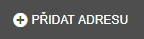

filTR
Každý sloupec je možné filtrovat a třídit podle menu nad každým sloupcem. Menu filtru seznamu je umístěno v levé horní části seznamu. Každá položka menu filtru umožní vyfiltrovat adresy podle potřeby uživatele. Jedná se vždy o adresy označené ve spisech jako "K osobní návštěvě".
VŠECHNY SPISY - systém zobrazí všechny spisy, které se nachází v záložkách OSOBNÍ NÁVŠTĚVY, DOHODY/SK, KE ZPRACOVÁNÍ
OSOBNÍ NÁVŠTĚVY - systém zobrazí všechny spisy, které se nachází v záložce OSOBNÍ NÁVŠTĚVY
NEZAŘAZENÉ - systém zobrazí všechny spisy, které se nachází v záložkách OSOBNÍ NÁVŠTĚVY a které nemají zadané Plánované datum OSN
VLASTNÍ ADRESY - jedná se o spisy, které si uživatel vložil pro účely trasace a které nejsou součástí spisů.
Vlastní adresa
Vložení nové vlastní adresy (hotel Brno, rodina ...), která může sloužit jako záchytný bod na cestě (např. k přespání apod.) se provede tlačítkem umístěným vedle filtru.

Všechny údaje v dialogovém okně jsou povinné. Adresa je automaticky zkontrolována a je nastavena GPS Souřadnice.
Ikonky naznačují, že adresu je možné (zleva) - Označit adresu, Smazat, Editovat a Zkontrolovat ručně .